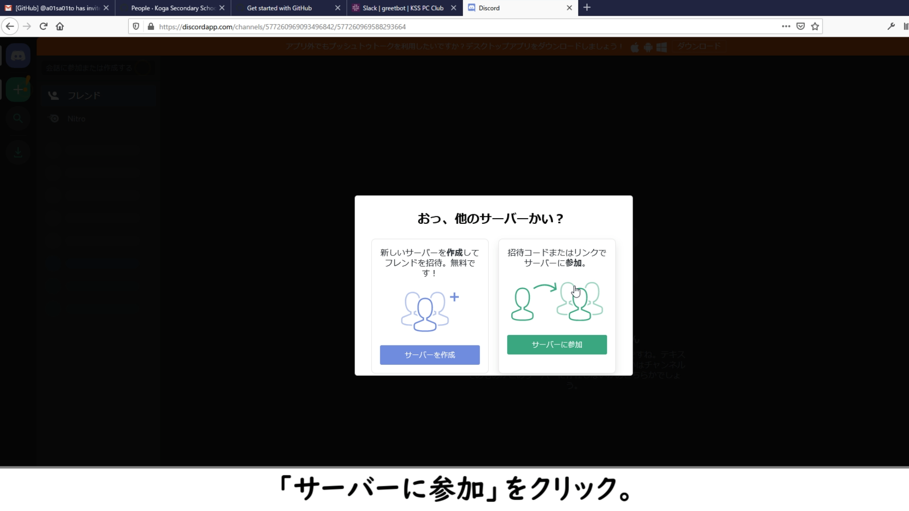
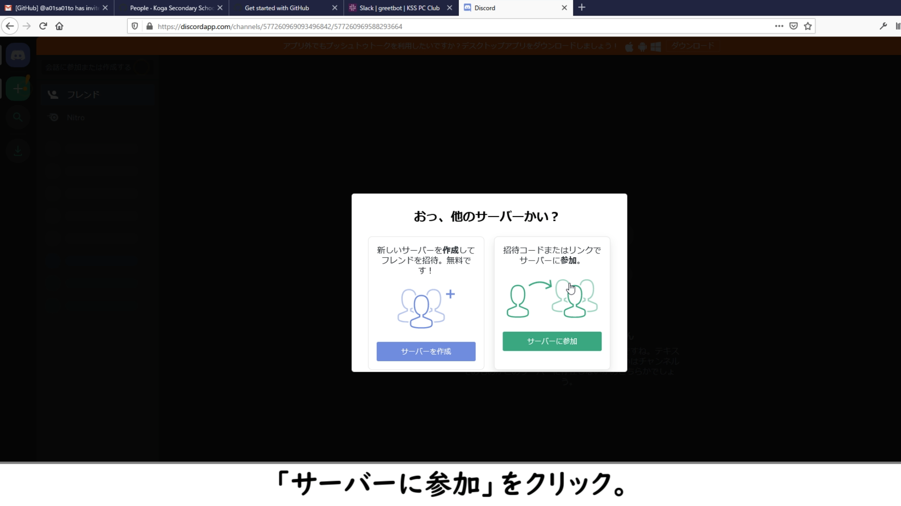

First Step
to Join KSS PC Club
(Powered by Reveal.js)
このチュートリアルの操作方法
- 右下の矢印ボタンか、キーボードの矢印キーで操作できます。
- Oキーを押すことで、スライド全体を見渡せます。
- Fキーを押すと、全画面で表示されます。解除するにはEscキーを押してください。
- https://firststep.kss-pc.club/にアクセスすれば、いつでも見れます。
- このページはオープンソースです。GitHubからページを編集できます。
目次
サービスに登録する
登録するサービスは以下の通りです。赤色は登録必須で、青色は登録任意です。
- Slack
- GitHub
- Discord
下スクロールで各サービスの説明を見れます
 Slackとは？
Slackとは？
 GitHubとは？
GitHubとは？
 Discordとは？
Discordとは？
 Trelloとは？
Trelloとは？
 HackMDとは？
HackMDとは？
Slackの登録 (1/6)
メールアドレス登録
https://s.kss-pc.club/slackにアクセスします。
次に出てくる画像で示されているように、自分のメールアドレスを入力します。

Slackの登録 (2/6)
氏名とパスワードの登録
メールアドレスを確認すると、画像のような画面が表示されるので、氏名とパスワードを登録します。
氏名は、漢字でもローマ字でも構いませんが、ニックネームはやめてください。

Slackの登録 (3/6)
#gen_chat チャンネルであいさつ
登録が完了すると、Greetbotからメッセージが届きます。
まずは、#gen_chat チャンネルを開き、あいさつをしてみましょう！
コピペ用↓
〇年の【氏名】です！ゲーム制作に興味があるので自分でゲームを作れるように頑張りたいです！
Slackの登録 (4/6)
プロフィールの編集
あいさつできたら、自分のプロフィールを編集します。
左側にある「○○（自分）」をクリックして、自分のアイコンをクリック。右側にメニューが出るので、「プロフィールを編集」です！
以下の画像に沿って、編集していきます。
なお、「学年」は「〇年次」ではなく「第〇期生」と入力してください。


Slackの登録 (5/6)
学年チャンネルの作成
学年リーダーは、学年チャンネルを作成します。
画面左「+」から、「チャンネルを作成する」
画像のように入力し、「プライベートチャンネルにする」をオンにして、「作成」！
メンバーの追加も忘れずに！！


Slackの登録 (6/6)
モバイルアプリのインストール
いつでも通知を受け取れるように、忘れずにスマホ版アプリも入れておきましょう。
AppStore・
Google Play
GitHubの登録 (1/7)
GitHubを開く
https://github.co.jp/ にアクセスし、「登録する」をクリックします。
もうすでに登録している人は、Step6に進んでください。
複数のアカウントを持つことは、利用規約違反となります。自分が古河中等PC部に所属していることは外部から隠すことができるので、PC部用にアカウントを作成しないでください。
GitHubの登録 (2/7)
アカウント登録
ユーザー名、メールアドレス、パスワードを登録し、ロボットではない確認をします。
ユーザー名は自分の覚えやすいものにしておきましょう。
GitHubの登録 (3/7)
プランの選択
プランを選択しましょう。
「Individual」の「Free」プランで十分です。
もし、「Pro」プランの機能も欲しければ、「GitHub Student Developer Pack」で無料で機能が付与されるので、試してみましょう。
GitHubの登録 (4/7)
アンケートに答える
アンケートに回答します。
画像の指示に従い、選択します。

GitHubの登録 (5/7)
メールアドレスの確認
アンケートの回答が終わると、確認メールが届きます。
メールアドレスを認証しましょう。
GitHubの登録 (6/7)
GitHub Teams への招待
部長に、自分のGitHubユーザー名を伝えます。
しばらくすると、部長から招待された旨のメッセージが来るので、メールを確認します。
来たメールの「Join @kss-pc-club」をクリックし、参加します。
GitHubの登録 (7/7)
モバイルアプリのインストール
いつでも通知を受け取れるように、忘れずにスマホ版アプリも入れておきましょう。
AppStore・
Google Play
Discordの登録 (1/6)
登録リンクを開く
Discordの登録 (2/6)
アカウント登録
ユーザー名、メールアドレス、パスワードを登録します。
ユーザー名は知らせなくてかまいませんが、誰かがわかるようにニックネームを変更して下さい。
Discordの登録 (3/6)
サーバーに参加
チュートリアルが表示されると思いますが、飛ばしてかまいません。
画面左上の「+」をクリックして、「サーバーに参加」です。
Slackで送られたURLを入力します。
 

Discordの登録 (4/6)
参加完了のサイン
以下の画面が出れば、参加はできています。
次のステップに進みましょう。
Discordの登録 (5/6)
メールアドレスの確認
メールアドレスを認証しましょう。
Discordの登録 (6/6)
モバイルアプリのインストール
いつでも通知を受け取れるように、忘れずにスマホ版アプリも入れておきましょう。
AppStore・
Google Play
Gitのインストール (1/3)
インストーラーのダウンロード
https://git-scm.com/ を開きます。
画面右側にある「Download x.x.x for Windows」をクリックし、ダウンロード。
Gitのインストール (2/3)
インストール
インストールします。自分のものにあったように設定してください。
よくわからないものは、デフォルトで良いです。
ただし、画像の1枚目は、「Use Visual Studio Code as ～」、2枚目はそのままで進んでください。

Gitのインストール (3/3)
設定
インストールが終わったら、コマンドプロンプトを開き、設定をします。
以下のコマンドを貼り付け、自分のものに編集して、Enterを押します。
ユーザー名はGitHubに登録しているもの。
メールアドレスはこちらにある、「～@users.noreply.github.com」がベストです。
git config --global user.name "ユーザー名"git config --global user.email "メールアドレス"Visual Studio Codeのインストール
こちらからダウンロードし、インストール。
GitHub Learning Labで使い方講座を受ける（任意）
GitHubの公式サービスです。https://lab.github.com/
登録すると、使い方やプログラミング言語についてなど、体験型講座が受けられます。
まずは、「First Day on GitHub」を受けることをお勧めします。
終わり
お疲れ様でした。
これからパソコン部としての活動を頑張っていきましょう！